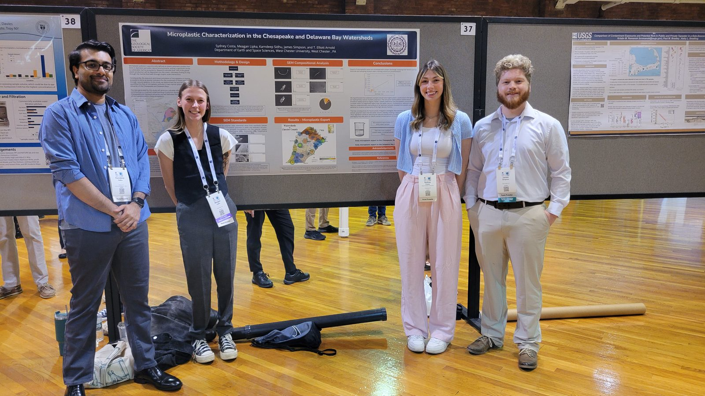

Research Overview
Members of our lab group investigate chemical biomarkers across a range of depositional environments and temporal scales. We use these biomarkers as proxies for environmental change. Additionally, we study the impacts of emerging contaminants on aquatic systems across the Piedmont region.

How people lived in the past
Chemical traces in lake sediments can show when people and their animals lived nearby. At Lake Orurillo in the highlands of Peru, we used traces from animal waste to follow 4,000 years of llama and alpaca herding. Herding grew during a long drought around 1050 CE and dropped sharply after the Spanish conquest.
We are also working with collaborators at Auburn University and the University of Florida to determine how Maya communities responded to water quality degradation at multiple sites across the Yucatán. To do this, we are analyzing a suite of biogeochemical proxies (fecal stanols, nitrogen isotopes and leaf wax lipids) that reflect human presence near each site, nutrient cycling within each lake, and terrestrial vegetation changes within each watershed.
Past climate and environmental change
Leaf waxes from plants wash into lakes and are preserved in the mud, where they record regional hydrological changes that occurred when the plants grew. We use these leaf waxes to reconstruct precipitation changes at sites throughout the Neotropics to determine how these sites responded to variations in Northern Hemisphere ice volume.
To read these records correctly, we need to know what controls them today. A study of 76 lakes across Mexico and Central America found that the type of forest around a lake matters as much as rainfall, which helps scientists interpret past climate records from the region.
Pollution in local streams
Closer to home, students in the lab sample streams across southeastern Pennsylvania to understand the environmental drivers of microplastic pollution. We have processed water-column and sediment samples from dozens of streams and rivers to measure microplastic concentrations, and we have also measured rates of atmospheric deposition of fibrous microplastics (mainly polyesters). We have found that the majority of microplastic pollution in freshwater streams is derived from synthetic textiles.
Additionally, we use hyporheic exchange models to estimate the long-term storage of microplastics in stream sediments. These models demonstrate that streams across the Piedmont region function as storage and retention bodies for microplastics, and that small streams retain a greater fraction of microplastics in sediment than large streams.
Methods and facilities
Our lab uses West Chester University's Center for Microanalysis and Imaging Research and Training (CMIRT), a shared facility with electron microscopes, X-ray diffraction and other instruments for analyzing and imaging samples. We also have a Thermo Trace 1300 gas chromatograph equipped with a flame ionization detector (GC-FID), an ASE 350 accelerated solvent extractor, and Thermo Fisher iS5 and Nicolet Protégé 460 FTIR spectrometers.